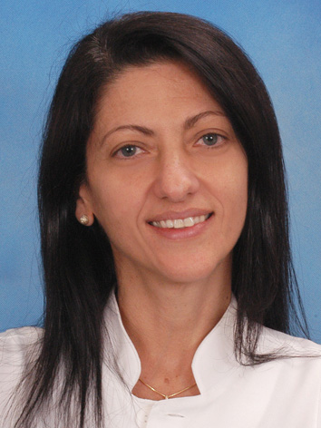
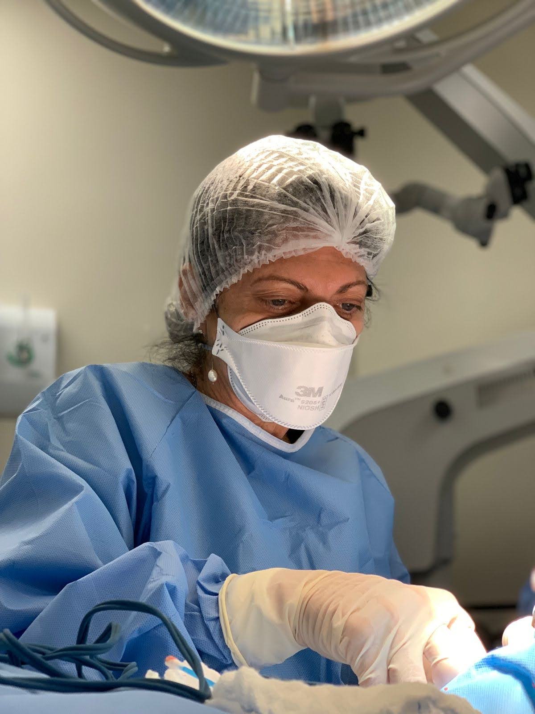
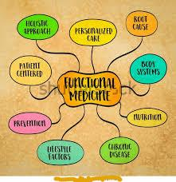

|
 Dr. Cristina MuccioliGeneral Practitioner Specializing in Telemedicine Consultations |
| Home | Telemedicine | Biography | Publications | Contact |
WelcomeWelcome to the official website of Dr. Cristina Muccioli, your trusted general practitioner offering expert telemedicine consultations. With a focus on accessible healthcare, Dr. Muccioli combines medical expertise with a passion for ethics and communication to provide personalized care from anywhere.
 Telemedicine ConsultationsAs a dedicated general practitioner, Dr. Cristina Muccioli specializes in telemedicine, offering comprehensive healthcare services online. Whether you need routine check-ups, medical advice, or chronic condition management, our virtual consultations ensure high-quality care with convenience.
Book your telemedicine appointment today and experience compassionate, professional care from the comfort of your home. BiographyDr. Cristina Muccioli is a general practitioner with a unique background in ethics and communication, graduated from the University of Bologna. Her approach to medicine integrates clinical expertise with a deep commitment to patient well-being, making her a leader in telemedicine. With years of experience in healthcare and academia, Dr. Muccioli bridges medical practice with human-centered care, ensuring every patient feels heard and valued.
PublicationsDr. Muccioli has contributed to healthcare and ethics through her writings, including:
Contact
Schedule a telemedicine consultation or reach out for inquiries:
 |
|
© 2025 Dr. Cristina Muccioli. All rights reserved. |